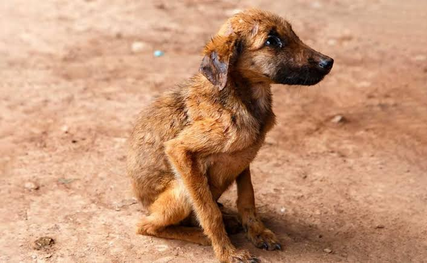
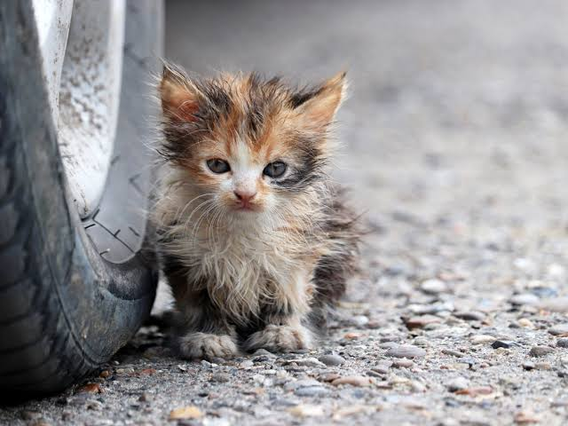

Galería de Adopciones
Conoce a nuestros perritos y gatitos que están buscando un hogar lleno de amor. Cada ficha contiene información básica para iniciar el proceso de adopción responsable.

Max
Edad: 1 año
Carácter: Juguetón y amigable.

Luna
Edad: 6 meses
Carácter: Tranquila y tierna.